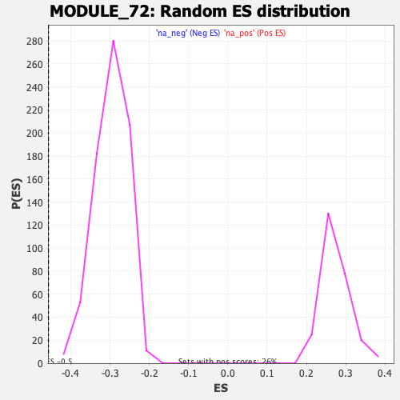

| | | Dataset | DE_genes |
| Phenotype | NoPhenotypeAvailable |
| Upregulated in class | na_neg |
| GeneSet | MODULE_72 |
| Enrichment Score (ES) | -0.45744777 |
| Normalized Enrichment Score (NES) | -1.5439113 |
| Nominal p-value | 0.0 |
| FDR q-value | 0.18513034 |
| FWER p-Value | 0.916 |
Table: GSEA Results Summary
 Fig 1: Enrichment plot: MODULE_72
Fig 1: Enrichment plot: MODULE_72
Profile of the Running ES Score & Positions of GeneSet Members on the Rank Ordered List
| PROBE | GENE SYMBOL | GENE_TITLE | RANK IN GENE LIST | RANK METRIC SCORE | RUNNING ES | CORE ENRICHMENT | | 1 | CDH2 | | | 255 | 3.208 | -0.0020 | No |
| 2 | SF3A2 | | | 358 | 2.399 | 0.0023 | No |
| 3 | PSMA4 | | | 408 | 2.148 | 0.0090 | No |
| 4 | MSMO1 | | | 475 | 1.846 | 0.0132 | No |
| 5 | TOP2A | | | 533 | 1.653 | 0.0171 | No |
| 6 | SOD3 | | | 613 | 1.440 | 0.0185 | No |
| 7 | C1S | | | 637 | 1.391 | 0.0234 | No |
| 8 | RNF167 | | | 657 | 1.360 | 0.0284 | No |
| 9 | LSM3 | | | 669 | 1.334 | 0.0338 | No |
| 10 | DGUOK | | | 748 | 1.201 | 0.0342 | No |
| 11 | CCNA1 | | | 830 | 1.076 | 0.0339 | No |
| 12 | GSTA4 | | | 920 | 0.956 | 0.0324 | No |
| 13 | PTGDS | | | 1083 | 0.768 | 0.0253 | No |
| 14 | ALDH1A1 | | | 1143 | 0.727 | 0.0248 | No |
| 15 | ZWINT | | | 1176 | 0.696 | 0.0259 | No |
| 16 | LPAR2 | | | 1306 | 0.610 | 0.0202 | No |
| 17 | HDDC2 | | | 1330 | 0.599 | 0.0214 | No |
| 18 | SOX9 | | | 1338 | 0.594 | 0.0237 | No |
| 19 | EXD2 | | | 1440 | 0.547 | 0.0196 | No |
| 20 | GCC2 | | | 1452 | 0.542 | 0.0214 | No |
| 21 | PCYT2 | | | 1457 | 0.540 | 0.0236 | No |
| 22 | TCFL5 | | | 1463 | 0.536 | 0.0257 | No |
| 23 | CREM | | | 1658 | 0.451 | 0.0150 | No |
| 24 | IFI27 | | | 1711 | 0.427 | 0.0136 | No |
| 25 | FADS1 | | | 1731 | 0.415 | 0.0142 | No |
| 26 | RBCK1 | | | 1801 | 0.390 | 0.0115 | No |
| 27 | NFE2L2 | | | 1812 | 0.387 | 0.0126 | No |
| 28 | TMX4 | | | 1826 | 0.381 | 0.0135 | No |
| 29 | MAPRE1 | | | 1898 | 0.355 | 0.0105 | No |
| 30 | PCNA | | | 1925 | 0.348 | 0.0104 | No |
| 31 | GYG1 | | | 2043 | 0.314 | 0.0041 | No |
| 32 | APOE | | | 2087 | 0.301 | 0.0027 | No |
| 33 | UBE2N | | | 2091 | 0.300 | 0.0039 | No |
| 34 | COL1A2 | | | 2108 | 0.295 | 0.0042 | No |
| 35 | HPRT1 | | | 2150 | 0.281 | 0.0028 | No |
| 36 | CSNK2A1 | | | 2162 | 0.277 | 0.0033 | No |
| 37 | TPX2 | | | 2166 | 0.276 | 0.0044 | No |
| 38 | MDM1 | | | 2281 | 0.247 | -0.0020 | No |
| 39 | ARPP19 | | | 2284 | 0.246 | -0.0010 | No |
| 40 | TRIM16 | | | 2299 | 0.244 | -0.0008 | No |
| 41 | MRPL47 | | | 2359 | 0.230 | -0.0036 | No |
| 42 | PSMA3 | | | 2405 | 0.226 | -0.0055 | No |
| 43 | CCP110 | | | 2470 | 0.214 | -0.0087 | No |
| 44 | CFD | | | 2550 | 0.200 | -0.0130 | No |
| 45 | NSF | | | 2597 | 0.191 | -0.0152 | No |
| 46 | PCOLCE | | | 2610 | 0.188 | -0.0151 | No |
| 47 | MRPL3 | | | 2660 | 0.182 | -0.0175 | No |
| 48 | SP3 | | | 2740 | 0.170 | -0.0219 | No |
| 49 | ZYX | | | 2857 | 0.155 | -0.0288 | No |
| 50 | RAB31 | | | 2878 | 0.152 | -0.0294 | No |
| 51 | TRIB2 | | | 2910 | 0.148 | -0.0308 | No |
| 52 | CBX3 | | | 3082 | 0.133 | -0.0414 | No |
| 53 | KIF2C | | | 3093 | 0.132 | -0.0415 | No |
| 54 | ARL4A | | | 3096 | 0.132 | -0.0410 | No |
| 55 | SNRPF | | | 3197 | 0.122 | -0.0470 | No |
| 56 | CXADR | | | 3257 | 0.117 | -0.0504 | No |
| 57 | PAICS | | | 3259 | 0.116 | -0.0499 | No |
| 58 | TTK | | | 3326 | 0.112 | -0.0537 | No |
| 59 | OR7E12P | | | 3382 | 0.108 | -0.0569 | No |
| 60 | NAE1 | | | 3397 | 0.107 | -0.0573 | No |
| 61 | SRP19 | | | 3536 | 0.097 | -0.0659 | No |
| 62 | MPI | | | 3554 | 0.096 | -0.0666 | No |
| 63 | CCNB2 | | | 3631 | 0.090 | -0.0712 | No |
| 64 | NEK2 | | | 3759 | 0.084 | -0.0792 | No |
| 65 | GTF2A2 | | | 3778 | 0.083 | -0.0800 | No |
| 66 | TYMS | | | 4411 | 0.047 | -0.1214 | No |
| 67 | CITED1 | | | 4470 | 0.043 | -0.1250 | No |
| 68 | NFKBIB | | | 4473 | 0.043 | -0.1249 | No |
| 69 | PTPN12 | | | 4570 | 0.038 | -0.1311 | No |
| 70 | C7 | | | 4627 | 0.035 | -0.1346 | No |
| 71 | PENK | | | 4735 | 0.029 | -0.1415 | No |
| 72 | CKAP5 | | | 4821 | 0.025 | -0.1470 | No |
| 73 | TRIP13 | | | 4856 | 0.024 | -0.1491 | No |
| 74 | UGCG | | | 4881 | 0.022 | -0.1506 | No |
| 75 | TYRO3 | | | 4914 | 0.021 | -0.1526 | No |
| 76 | MICAL2 | | | 4988 | 0.017 | -0.1573 | No |
| 77 | SNRPB2 | | | 5023 | 0.015 | -0.1595 | No |
| 78 | BIRC2 | | | 5272 | 0.003 | -0.1758 | No |
| 79 | MYL9 | | | 5274 | 0.002 | -0.1759 | No |
| 80 | SSBP1 | | | 5275 | 0.002 | -0.1759 | No |
| 81 | SLC16A3 | | | 5481 | -0.008 | -0.1893 | No |
| 82 | CDC20 | | | 5559 | -0.012 | -0.1943 | No |
| 83 | COL6A2 | | | 5624 | -0.016 | -0.1985 | No |
| 84 | MSI1 | | | 5814 | -0.027 | -0.2108 | No |
| 85 | SMARCA2 | | | 5831 | -0.028 | -0.2117 | No |
| 86 | SFRP1 | | | 5844 | -0.029 | -0.2124 | No |
| 87 | CDK16 | | | 5881 | -0.031 | -0.2146 | No |
| 88 | PSMC2 | | | 5896 | -0.032 | -0.2154 | No |
| 89 | TRIP12 | | | 5954 | -0.036 | -0.2190 | No |
| 90 | C5orf15 | | | 5991 | -0.039 | -0.2212 | No |
| 91 | GTF2E2 | | | 6014 | -0.040 | -0.2224 | No |
| 92 | SF3A1 | | | 6311 | -0.060 | -0.2416 | No |
| 93 | MYH11 | | | 6389 | -0.064 | -0.2464 | No |
| 94 | EPB41L3 | | | 6430 | -0.067 | -0.2487 | No |
| 95 | CDKN3 | | | 6497 | -0.073 | -0.2528 | No |
| 96 | PLP1 | | | 6544 | -0.075 | -0.2554 | No |
| 97 | TFDP1 | | | 6545 | -0.075 | -0.2551 | No |
| 98 | BTG3 | | | 6626 | -0.083 | -0.2600 | No |
| 99 | MTMR6 | | | 6648 | -0.084 | -0.2610 | No |
| 100 | METAP1 | | | 6894 | -0.102 | -0.2766 | No |
| 101 | APOM | | | 6901 | -0.103 | -0.2766 | No |
| 102 | MAPK8IP3 | | | 6923 | -0.105 | -0.2775 | No |
| 103 | TSPAN3 | | | 6944 | -0.106 | -0.2783 | No |
| 104 | RAB11A | | | 7050 | -0.114 | -0.2847 | No |
| 105 | USP9X | | | 7066 | -0.116 | -0.2851 | No |
| 106 | COPS5 | | | 7134 | -0.121 | -0.2890 | No |
| 107 | FAT1 | | | 7135 | -0.121 | -0.2884 | No |
| 108 | SAC3D1 | | | 7172 | -0.124 | -0.2902 | No |
| 109 | CKS2 | | | 7267 | -0.133 | -0.2958 | No |
| 110 | UBE2M | | | 7353 | -0.141 | -0.3007 | No |
| 111 | GFPT1 | | | 7423 | -0.147 | -0.3046 | No |
| 112 | SCCPDH | | | 7446 | -0.148 | -0.3054 | No |
| 113 | POLE3 | | | 7460 | -0.149 | -0.3055 | No |
| 114 | TPM1 | | | 7474 | -0.150 | -0.3057 | No |
| 115 | PTTG1 | | | 7477 | -0.150 | -0.3051 | No |
| 116 | TMED3 | | | 7620 | -0.163 | -0.3137 | No |
| 117 | DYRK1A | | | 7639 | -0.165 | -0.3142 | No |
| 118 | TLK1 | | | 7656 | -0.167 | -0.3144 | No |
| 119 | PSMD14 | | | 7663 | -0.167 | -0.3141 | No |
| 120 | MOK | | | 7683 | -0.169 | -0.3145 | No |
| 121 | SUZ12 | | | 7692 | -0.170 | -0.3143 | No |
| 122 | CALB2 | | | 7708 | -0.171 | -0.3145 | No |
| 123 | INHBB | | | 7820 | -0.181 | -0.3210 | No |
| 124 | TSG101 | | | 7878 | -0.187 | -0.3238 | No |
| 125 | TNPO1 | | | 7881 | -0.187 | -0.3231 | No |
| 126 | COL15A1 | | | 7957 | -0.194 | -0.3272 | No |
| 127 | IGFBP4 | | | 8043 | -0.203 | -0.3318 | No |
| 128 | CEBPZ | | | 8143 | -0.213 | -0.3374 | No |
| 129 | SCP2 | | | 8240 | -0.222 | -0.3427 | No |
| 130 | MAPK6 | | | 8272 | -0.226 | -0.3437 | No |
| 131 | ABCD3 | | | 8384 | -0.238 | -0.3499 | No |
| 132 | UBE4A | | | 8446 | -0.245 | -0.3528 | No |
| 133 | SERPINH1 | | | 8464 | -0.247 | -0.3527 | No |
| 134 | PLK1 | | | 8471 | -0.248 | -0.3520 | No |
| 135 | SRSF2 | | | 8689 | -0.273 | -0.3650 | No |
| 136 | GJA1 | | | 8690 | -0.273 | -0.3638 | No |
| 137 | NUP93 | | | 8727 | -0.277 | -0.3648 | No |
| 138 | FKBP8 | | | 8733 | -0.278 | -0.3639 | No |
| 139 | DNALI1 | | | 8805 | -0.287 | -0.3673 | No |
| 140 | CRIM1 | | | 8943 | -0.303 | -0.3749 | No |
| 141 | TFRC | | | 9178 | -0.332 | -0.3888 | No |
| 142 | COPS2 | | | 9194 | -0.335 | -0.3882 | No |
| 143 | JARID2 | | | 9249 | -0.341 | -0.3902 | No |
| 144 | SRP54 | | | 9282 | -0.345 | -0.3907 | No |
| 145 | HMGXB4 | | | 9362 | -0.354 | -0.3943 | No |
| 146 | KIF5C | | | 9370 | -0.355 | -0.3931 | No |
| 147 | HSF2 | | | 9406 | -0.359 | -0.3937 | No |
| 148 | SLC2A5 | | | 9424 | -0.362 | -0.3932 | No |
| 149 | CHN1 | | | 9506 | -0.374 | -0.3968 | No |
| 150 | PRPSAP1 | | | 9530 | -0.377 | -0.3966 | No |
| 151 | PEG3 | | | 9768 | -0.412 | -0.4103 | No |
| 152 | FHL2 | | | 9779 | -0.414 | -0.4090 | No |
| 153 | PSMG1 | | | 9862 | -0.427 | -0.4125 | No |
| 154 | CADM1 | | | 9868 | -0.427 | -0.4108 | No |
| 155 | MFAP2 | | | 9954 | -0.440 | -0.4144 | No |
| 156 | FBLN2 | | | 9994 | -0.445 | -0.4149 | No |
| 157 | GSTM1 | | | 10006 | -0.447 | -0.4136 | No |
| 158 | ZBTB20 | | | 10033 | -0.451 | -0.4132 | No |
| 159 | DDX3Y | | | 10058 | -0.456 | -0.4127 | No |
| 160 | CDR2 | | | 10142 | -0.469 | -0.4160 | No |
| 161 | POLRMT | | | 10309 | -0.493 | -0.4246 | No |
| 162 | ITGA6 | | | 10344 | -0.498 | -0.4246 | No |
| 163 | RASSF2 | | | 10494 | -0.518 | -0.4320 | No |
| 164 | UTP18 | | | 10581 | -0.534 | -0.4352 | No |
| 165 | GATM | | | 10628 | -0.542 | -0.4357 | No |
| 166 | SNW1 | | | 10835 | -0.572 | -0.4467 | No |
| 167 | MYL6B | | | 10862 | -0.577 | -0.4457 | No |
| 168 | MCM6 | | | 10942 | -0.589 | -0.4482 | No |
| 169 | RBP1 | | | 10950 | -0.590 | -0.4459 | No |
| 170 | ZNHIT3 | | | 11040 | -0.604 | -0.4490 | No |
| 171 | DNM2 | | | 11090 | -0.613 | -0.4494 | No |
| 172 | WDR45B | | | 11148 | -0.626 | -0.4503 | No |
| 173 | PTN | | | 11230 | -0.642 | -0.4526 | No |
| 174 | EEF1E1 | | | 11304 | -0.658 | -0.4544 | Yes |
| 175 | PRKCI | | | 11322 | -0.661 | -0.4525 | Yes |
| 176 | MCM2 | | | 11364 | -0.670 | -0.4521 | Yes |
| 177 | RAB11FIP5 | | | 11378 | -0.673 | -0.4498 | Yes |
| 178 | PTOV1 | | | 11397 | -0.678 | -0.4479 | Yes |
| 179 | TPM2 | | | 11407 | -0.680 | -0.4454 | Yes |
| 180 | NECAB3 | | | 11411 | -0.681 | -0.4424 | Yes |
| 181 | SNRPC | | | 11412 | -0.681 | -0.4393 | Yes |
| 182 | FSTL3 | | | 11426 | -0.684 | -0.4370 | Yes |
| 183 | HNRNPA0 | | | 11479 | -0.695 | -0.4372 | Yes |
| 184 | DDX1 | | | 11493 | -0.697 | -0.4348 | Yes |
| 185 | KDM5B | | | 11507 | -0.700 | -0.4325 | Yes |
| 186 | CHPF | | | 11529 | -0.705 | -0.4306 | Yes |
| 187 | COPS3 | | | 11555 | -0.710 | -0.4290 | Yes |
| 188 | RBBP4 | | | 11611 | -0.723 | -0.4293 | Yes |
| 189 | STMN1 | | | 11624 | -0.725 | -0.4267 | Yes |
| 190 | LSM14A | | | 11632 | -0.729 | -0.4238 | Yes |
| 191 | SRRM2 | | | 11659 | -0.734 | -0.4221 | Yes |
| 192 | BRD8 | | | 11763 | -0.754 | -0.4254 | Yes |
| 193 | HOPX | | | 11786 | -0.759 | -0.4234 | Yes |
| 194 | SGCE | | | 11787 | -0.760 | -0.4199 | Yes |
| 195 | CBX1 | | | 11814 | -0.764 | -0.4181 | Yes |
| 196 | DAP3 | | | 11876 | -0.778 | -0.4185 | Yes |
| 197 | CSE1L | | | 11910 | -0.788 | -0.4170 | Yes |
| 198 | GMPS | | | 11958 | -0.796 | -0.4165 | Yes |
| 199 | EWSR1 | | | 11985 | -0.801 | -0.4145 | Yes |
| 200 | IMMT | | | 12021 | -0.809 | -0.4131 | Yes |
| 201 | AKAP12 | | | 12025 | -0.810 | -0.4095 | Yes |
| 202 | IGFBP2 | | | 12028 | -0.811 | -0.4059 | Yes |
| 203 | COPB1 | | | 12103 | -0.831 | -0.4070 | Yes |
| 204 | ENPP2 | | | 12132 | -0.837 | -0.4049 | Yes |
| 205 | IP6K1 | | | 12153 | -0.843 | -0.4024 | Yes |
| 206 | PPP4R1 | | | 12155 | -0.843 | -0.3986 | Yes |
| 207 | WFS1 | | | 12184 | -0.852 | -0.3965 | Yes |
| 208 | IK | | | 12187 | -0.853 | -0.3927 | Yes |
| 209 | KCTD17 | | | 12217 | -0.858 | -0.3906 | Yes |
| 210 | SLC7A5 | | | 12329 | -0.885 | -0.3938 | Yes |
| 211 | SMARCA1 | | | 12373 | -0.894 | -0.3926 | Yes |
| 212 | SLBP | | | 12420 | -0.909 | -0.3914 | Yes |
| 213 | POMZP3 | | | 12421 | -0.910 | -0.3872 | Yes |
| 214 | ECHS1 | | | 12459 | -0.918 | -0.3854 | Yes |
| 215 | ACD | | | 12461 | -0.919 | -0.3812 | Yes |
| 216 | FOXJ3 | | | 12462 | -0.919 | -0.3770 | Yes |
| 217 | PEG10 | | | 12544 | -0.939 | -0.3780 | Yes |
| 218 | YPEL1 | | | 12596 | -0.952 | -0.3770 | Yes |
| 219 | GTF3C1 | | | 12629 | -0.962 | -0.3746 | Yes |
| 220 | HMOX2 | | | 12654 | -0.968 | -0.3718 | Yes |
| 221 | AEBP1 | | | 12795 | -1.011 | -0.3763 | Yes |
| 222 | TCEAL4 | | | 12813 | -1.015 | -0.3727 | Yes |
| 223 | HAGH | | | 12859 | -1.031 | -0.3710 | Yes |
| 224 | ABHD2 | | | 13053 | -1.091 | -0.3786 | Yes |
| 225 | ZBTB18 | | | 13136 | -1.115 | -0.3789 | Yes |
| 226 | AIMP2 | | | 13146 | -1.119 | -0.3743 | Yes |
| 227 | TRAM2 | | | 13155 | -1.122 | -0.3697 | Yes |
| 228 | HSF1 | | | 13174 | -1.127 | -0.3657 | Yes |
| 229 | CAV1 | | | 13236 | -1.150 | -0.3644 | Yes |
| 230 | MYLK | | | 13238 | -1.151 | -0.3591 | Yes |
| 231 | CCHCR1 | | | 13311 | -1.177 | -0.3585 | Yes |
| 232 | RNF4 | | | 13418 | -1.219 | -0.3598 | Yes |
| 233 | DHX30 | | | 13448 | -1.231 | -0.3560 | Yes |
| 234 | PIK3R3 | | | 13529 | -1.264 | -0.3555 | Yes |
| 235 | TSPYL4 | | | 13572 | -1.281 | -0.3523 | Yes |
| 236 | SMARCA4 | | | 13688 | -1.323 | -0.3538 | Yes |
| 237 | KATNB1 | | | 13796 | -1.380 | -0.3545 | Yes |
| 238 | ATP6V0D1 | | | 13861 | -1.405 | -0.3522 | Yes |
| 239 | PSMD4 | | | 13868 | -1.408 | -0.3461 | Yes |
| 240 | TSC2 | | | 13928 | -1.436 | -0.3434 | Yes |
| 241 | INTS1 | | | 13961 | -1.451 | -0.3388 | Yes |
| 242 | PAIP1 | | | 14011 | -1.477 | -0.3352 | Yes |
| 243 | LRPAP1 | | | 14054 | -1.504 | -0.3311 | Yes |
| 244 | ULK1 | | | 14112 | -1.541 | -0.3277 | Yes |
| 245 | ZCCHC14 | | | 14138 | -1.557 | -0.3222 | Yes |
| 246 | CLEC3B | | | 14172 | -1.585 | -0.3170 | Yes |
| 247 | PARP2 | | | 14199 | -1.602 | -0.3114 | Yes |
| 248 | APBB3 | | | 14219 | -1.611 | -0.3052 | Yes |
| 249 | SEC24C | | | 14242 | -1.625 | -0.2991 | Yes |
| 250 | CPE | | | 14271 | -1.648 | -0.2934 | Yes |
| 251 | FLNA | | | 14285 | -1.653 | -0.2866 | Yes |
| 252 | DHX9 | | | 14356 | -1.691 | -0.2834 | Yes |
| 253 | SRSF5 | | | 14410 | -1.723 | -0.2790 | Yes |
| 254 | ADIPOR2 | | | 14427 | -1.736 | -0.2720 | Yes |
| 255 | CDC34 | | | 14428 | -1.737 | -0.2640 | Yes |
| 256 | GPRC5B | | | 14504 | -1.791 | -0.2607 | Yes |
| 257 | PRPF6 | | | 14541 | -1.820 | -0.2547 | Yes |
| 258 | SAFB2 | | | 14544 | -1.823 | -0.2464 | Yes |
| 259 | PPP2R5D | | | 14614 | -1.889 | -0.2422 | Yes |
| 260 | RCN2 | | | 14627 | -1.898 | -0.2343 | Yes |
| 261 | OAZ2 | | | 14673 | -1.941 | -0.2283 | Yes |
| 262 | CYB5R1 | | | 14729 | -1.997 | -0.2227 | Yes |
| 263 | SMC3 | | | 14744 | -2.010 | -0.2143 | Yes |
| 264 | TOMM34 | | | 14748 | -2.016 | -0.2052 | Yes |
| 265 | SNRPA1 | | | 14758 | -2.026 | -0.1965 | Yes |
| 266 | PLCG1 | | | 14799 | -2.062 | -0.1896 | Yes |
| 267 | DNAJB2 | | | 14834 | -2.093 | -0.1822 | Yes |
| 268 | HSPA2 | | | 14873 | -2.131 | -0.1749 | Yes |
| 269 | KHDRBS3 | | | 14883 | -2.140 | -0.1656 | Yes |
| 270 | ELAC2 | | | 14901 | -2.160 | -0.1568 | Yes |
| 271 | DDX39A | | | 14952 | -2.239 | -0.1497 | Yes |
| 272 | GOLGA8A | | | 14965 | -2.262 | -0.1401 | Yes |
| 273 | DNMT1 | | | 14980 | -2.281 | -0.1305 | Yes |
| 274 | QSOX1 | | | 15001 | -2.303 | -0.1212 | Yes |
| 275 | UBXN1 | | | 15005 | -2.312 | -0.1107 | Yes |
| 276 | FGFR1 | | | 15011 | -2.322 | -0.1003 | Yes |
| 277 | DDX42 | | | 15100 | -2.470 | -0.0947 | Yes |
| 278 | ENG | | | 15171 | -2.577 | -0.0875 | Yes |
| 279 | KDM1A | | | 15210 | -2.698 | -0.0775 | Yes |
| 280 | ABLIM1 | | | 15224 | -2.723 | -0.0658 | Yes |
| 281 | TSPYL2 | | | 15272 | -2.853 | -0.0558 | Yes |
| 282 | KLHDC3 | | | 15353 | -3.194 | -0.0463 | Yes |
| 283 | RANGAP1 | | | 15356 | -3.203 | -0.0317 | Yes |
| 284 | ITPR3 | | | 15436 | -4.017 | -0.0183 | Yes |
| 285 | PDGFRB | | | 15447 | -4.465 | 0.0016 | Yes |
Table: GSEA details [plain text format]

Fig 2: MODULE_72: Random ES distribution
Gene set null distribution of ES for MODULE_72